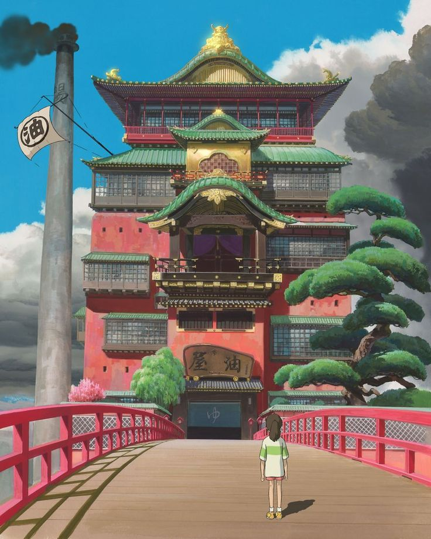
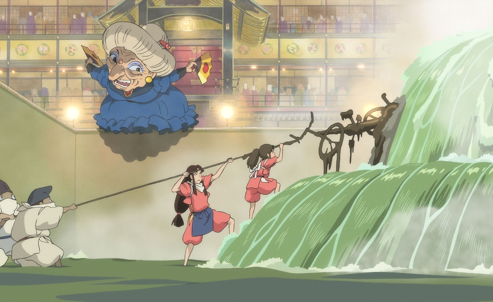
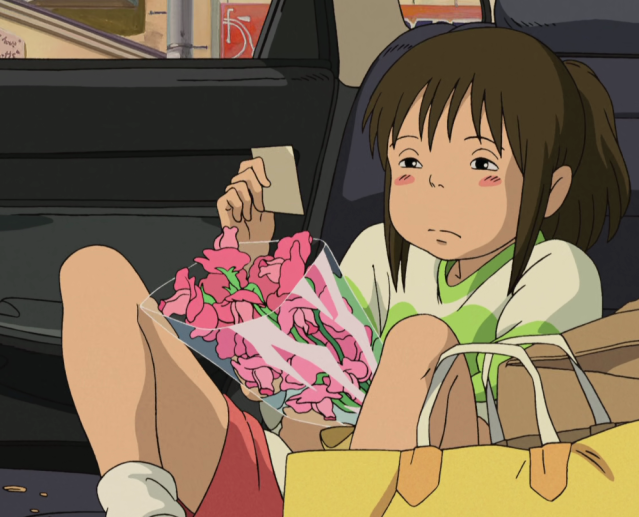
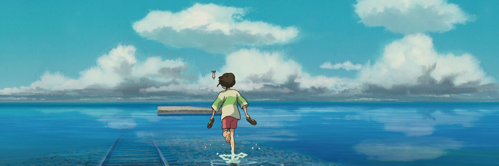

Spirited Away
Chihiro
Initially timid and unsure, Chihiro finds herself in a mysterious and magical world after her family stumbles upon an abandoned amusement park. Throughout her adventure, she evolves into a brave and resourceful girl as she navigates this strange realm, seeking to rescue her parents who have been transformed into pigs. Chihiro's journey is filled with challenges that she overcomes by forming friendships with various intriguing creatures, demonstrating her kindness, determination, and growth.




